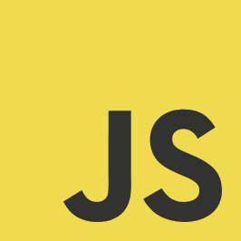
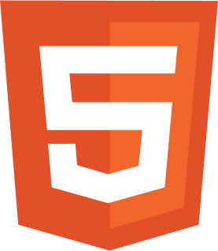
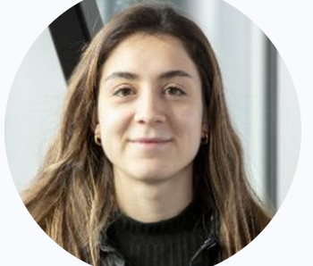
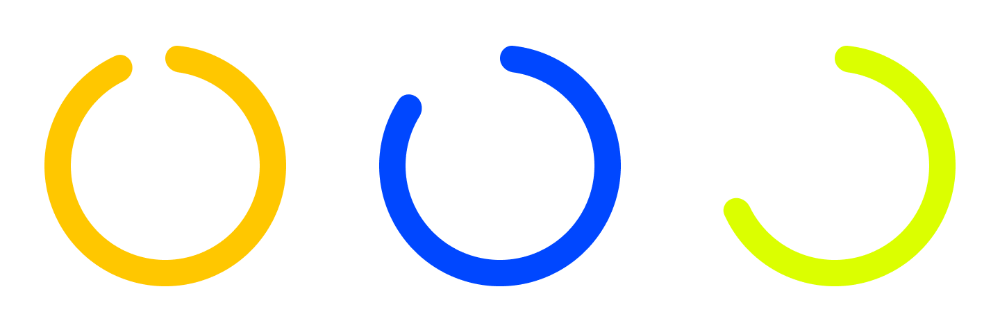

Coneixements



Sóc la Ana Ibáñez Esplugues, llicenciada en Periodisme i Humanitats per la Universitat Pompeu Fabra. Tinc experiència en comunicació, creació de continguts i traducció, després d’haver treballat en entorns corporatius i acadèmics on he desenvolupat una gran capacitat per adaptar missatges i comunicar de manera clara i precisa.
El meu perfil combina habilitats tècniques i creatives: des de la programació i l’anàlisi de dades fins a la redacció i la gestió de continguts digitals. Em considero una persona organitzada, curiosa i amb ganes d’aprendre constantment, especialment en l’àmbit tecnològic i de la comunicació digital. En aquest portfoli pots consultar el meu currículum i posar-te en contacte amb mi.


